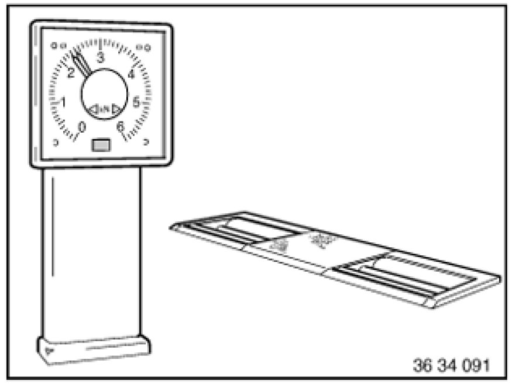

Checking Brakes on Test Stand
34 00 009 - Checking brakes on test stand

Note:
1. Check tires for damage
2. Check tire treads
3. Check tire pressure
Follow Brake testing instructions for E83 (X3).
You must follow without fail the guidelines contained in the operating instructions of the relevant test stand manufacturer.

Important!
Only brake test stands (analyzers) with test speeds of 2.5-6 km/h may be used.
Before driving onto the brake test stand (dynamic brake analyzer), switch off the Hill Descent Control (HDC) and keep it switched off while testing the brakes.
The HDC indicator lamp must not light up!
Note:
It is possible for the HDC indicator lamp to go out or not to light up even when HDC mode is activated if HDC is temporarily unavailable on account of high operating temperature.

Important!
- Vehicles with manual transmission and XDrive:
Do not select a gear and do not accelerate.
- Vehicles with automatic transmission and XDrive:
Carry out brake testing with selector lever in N position (Neutral) only.
Do not accelerate when the rollers start up.
Failure to comply with this instruction may result in damage to the test stand or to the vehicle.